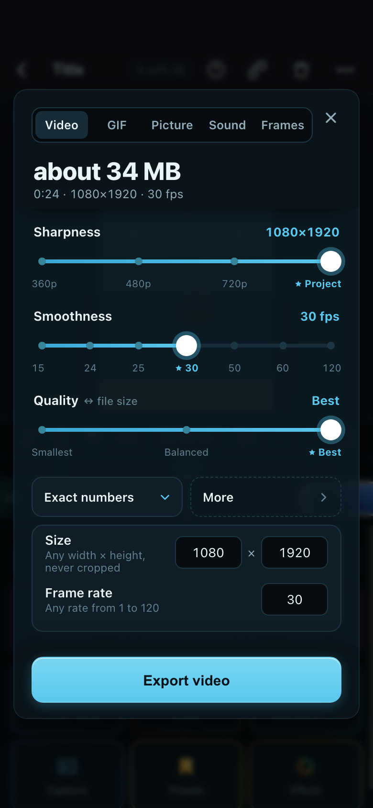
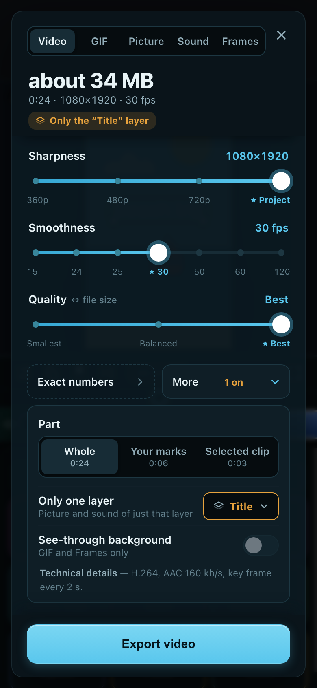

Phone · first glance

What you see first: “about 34 MB” and three sliders; the size moves as you drag.
Phone · Exact numbers opened

What you see first: W×H and fps boxes under the sliders.
Phone · More opened

What you see first: Part, Only one layer (“1 on”, amber under the size), See-through.
Good
- The size-against-quality trade-off is the easiest to feel.
- The shortest first screen of the three.
Weaker than A
- The closest to CapCut’s own look, which he said not to fully copy.
- The Sharpness stops change with every project (a 720p project has three), and rates like 24 or 29.97 fall between notches.
- Small targets for a thumb at 380 px, and a slider is easy to nudge by accident.
- Part is hidden under More, but it is a real first-timer question.